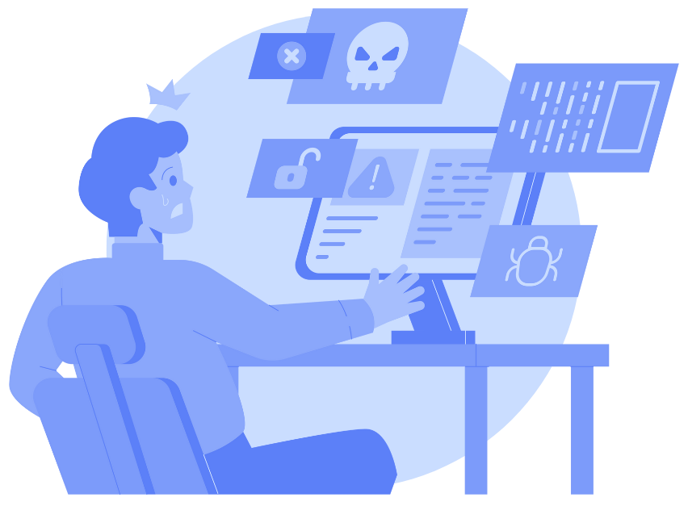

El origen de la piratería digital se remonta a los años 70 y 80, impulsado inicialmente por la copia de software entre aficionados, computadoras personales y la fragilidad de los disquetes. Con la expansión de internet en los 90 y 2000, plataformas como Napster popularizaron el intercambio P2P, transformando la copia ilegal de música, cine y software en un fenómeno global.

Amador Ledezma Emiliano Derdoy Gaspar Ymenzon presentacion